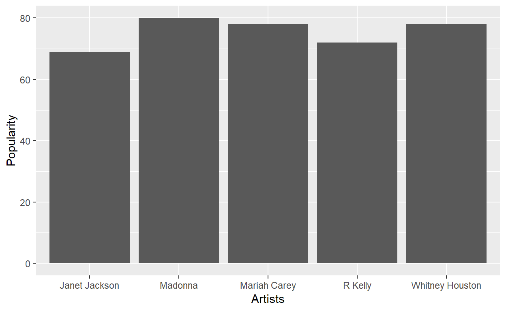

#Who and what were people listening to?
Let’s compare how musical taste changed over the last three decades. Let’s find who were the top 5 most popular artists in the 1990’s, 2000’s and 2010’s, what their musical genres were, how popular and many followers they have on spotify and some features about their music, such as energy, danceability, speechiness and tempo.
##Let’s start by authenticating
Sys.setenv(SPOTIFY_CLIENT_ID = 'ddfba0d81d8743599b32e3438d52e6c3')
Sys.setenv(SPOTIFY_CLIENT_SECRET = '33b2241bc4b74388909a355ac19a9504')
access_token <- get_spotify_access_token()##Top 5 most popular artists in the 1990’s
According to rateyourmusic.com and based on number of hits and weeks charted, the top 5 artists in the 1990s are:
- Mariah Carey
- Madonna
- Janet Jackson
- Whitney Houston
- R Kelly.
##Top 5 most popular artists in the 2000’s
According to top40weekly.com, the top 5 artists in the 2000’s are:
- Outkast
- Eminem
- Colplay
- Radiohead
- Kanye West
##Top 5 most popular artists in the 2010’s
According to the music-streaming service Spotify that launched almost 10 years ago and redefined how we listen to music, the top 5 artists of the 2010’s are:
- Drake
- Ed Sheeran
- Eminem
- The Weeknd
- Rihanna
##What is their popularity and how many spotify followers do they have as of today?
use function “search_spotify()” to search for artist ID:
For example, to find Madonna’s ID:
search_spotify(q ="madonna", type = "artist" )
# A tibble: 20 x 11
genres href id images name popularity type uri
<list> <chr> <chr> <list> <chr> <int> <chr> <chr>
1 <chr ~ http~ 6tbj~ <data~ Mado~ 79 arti~ spot~
2 <chr ~ http~ 77d8~ <data~ Buff~ 39 arti~ spot~
3 <chr ~ http~ 2nNE~ <data~ The ~ 46 arti~ spot~
4 <chr ~ http~ 16Ly~ <data~ Luig~ 44 arti~ spot~
5 <chr ~ http~ 1EQ0~ <data~ Mado~ 12 arti~ spot~
6 <chr ~ http~ 0mfS~ <data~ Rick~ 21 arti~ spot~
7 <chr ~ http~ 5qTU~ <data~ Pica~ 4 arti~ spot~
8 <chr ~ http~ 0NQ8~ <data~ Mado~ 9 arti~ spot~
9 <chr ~ http~ 13lT~ <data~ Mado~ 15 arti~ spot~
10 <chr ~ http~ 1Rdd~ <data~ Mado~ 5 arti~ spot~
11 <chr ~ http~ 3qBn~ <data~ Mado~ 0 arti~ spot~
12 <chr ~ http~ 699k~ <data~ Mado~ 0 arti~ spot~
13 <chr ~ http~ 0FGj~ <data~ Mado~ 0 arti~ spot~
14 <chr ~ http~ 0Z3c~ <data~ Mado~ 0 arti~ spot~
15 <chr ~ http~ 0kXv~ <data~ Mado~ 0 arti~ spot~
16 <chr ~ http~ 0l8o~ <data~ Mado~ 0 arti~ spot~
17 <chr ~ http~ 1Ajd~ <data~ Mado~ 0 arti~ spot~
18 <chr ~ http~ 1CCf~ <data~ Blvc~ 0 arti~ spot~
19 <chr ~ http~ 1Iei~ <data~ Mado~ 0 arti~ spot~
20 <chr ~ http~ 1M42~ <data~ Dash~ 3 arti~ spot~
# ... with 3 more variables: external_urls.spotify <chr>,
# followers.href <lgl>, followers.total <int>###1990s
madonna = "6tbjWDEIzxoDsBA1FuhfPW"
mariah_carey = "4iHNK0tOyZPYnBU7nGAgpQ"
janet_jackson = "4qwGe91Bz9K2T8jXTZ815W"
whitney_houston = "6XpaIBNiVzIetEPCWDvAFP"
r_kelly = "2mxe0TnaNL039ysAj51xPQ"
Madonna <- get_artist(madonna)
Madonna_followers <- Madonna$followers$total
Madonna_popularity <- Madonna$popularity
Mariah_carey <- get_artist(mariah_carey)
Mariah_carey_followers <- Mariah_carey$followers$total
Mariah_carey_popularity <- Mariah_carey$popularity
Janet_jackson <- get_artist(janet_jackson)
Janet_jackson_followers <- Janet_jackson$followers$total
Janet_jackson_popularity <- Janet_jackson$popularity
Whitney_houston <- get_artist(whitney_houston)
Whitney_houston_followers <- Whitney_houston$followers$total
Whitney_houston_popularity <- Whitney_houston$popularity
R_kelly <- get_artist(r_kelly)
R_kelly_followers <- R_kelly$followers$total
R_kelly_popularity <- R_kelly$popularity
artists_1990_followers <- data.table(artists = c("Madonna",
"Mariah Carey",
"Janet Jackson",
"Whitney Houston",
"R Kelly"),
followers =
c(Madonna_followers,
Mariah_carey_followers,
Janet_jackson_followers,
Whitney_houston_followers,
R_kelly_followers),
popularity =
c(Madonna_popularity,
Mariah_carey_popularity,
Janet_jackson_popularity,
Whitney_houston_popularity,
R_kelly_popularity)
)
artists_1990_followers %>%
ggplot(aes(x= artists, y= popularity))+
geom_bar(stat = "identity")+
labs(x="Artists",y= "Popularity")
artists_1990_followers %>%
ggplot(aes(x= artists, y= followers))+
geom_bar(stat = "identity")+
labs(x="Artists",y= "Number of followers")
###2000’s
outkast <- "1G9G7WwrXka3Z1r7aIDjI7"
eminem <- "7dGJo4pcD2V6oG8kP0tJRR"
coldplay <- "4gzpq5DPGxSnKTe4SA8HAU"
radiohead <- "4Z8W4fKeB5YxbusRsdQVPb"
kanye_west <- "5K4W6rqBFWDnAN6FQUkS6x"
Outkast <- get_artist(outkast)
Outkast_followers <- Outkast$followers$total
Outkast_popularity <- Outkast$popularity
Eminem <- get_artist(eminem)
Eminem_followers <- Eminem$followers$total
Eminem_popularity <- Eminem$popularity
Colplay <- get_artist(coldplay)
Colplay_followers <- Colplay$followers$total
Colplay_popularity <- Colplay$popularity
Radiohead <- get_artist(radiohead)
Radiohead_followers <- Radiohead$followers$total
Radiohead_popularity <- Radiohead$popularity
Kanye_west <- get_artist(kanye_west)
Kanye_west_followers <- Kanye_west$followers$total
Kanye_west_popularity <- Kanye_west$popularity
artists_2000_followers <- data.table(artists = c("OutKast",
"Eminem",
"Coldplay",
"Radiohead",
"Kanye West"),
followers =
c(Outkast_followers,
Eminem_followers,
Colplay_followers,
Radiohead_followers,
Kanye_west_followers),
popularity =
c(Outkast_popularity,
Eminem_popularity,
Colplay_popularity,
Radiohead_popularity,
Kanye_west_popularity)
)
artists_2000_followers %>%
ggplot(aes(x= artists, y= popularity))+
geom_bar(stat = "identity")+
labs(x="Artists",y= "Popularity")
artists_2000_followers %>%
ggplot(aes(x= artists, y= followers))+
geom_bar(stat = "identity")+
labs(x="Artists",y= "Number of followers")###2010’s
drake <- "3TVXtAsR1Inumwj472S9r4"
ed_sheeran <- "6eUKZXaKkcviH0Ku9w2n3V"
eminem <- "7dGJo4pcD2V6oG8kP0tJRR"
the_weeknd <- "1Xyo4u8uXC1ZmMpatF05PJ"
rihanna <- "5pKCCKE2ajJHZ9KAiaK11H"
Drake <- get_artist(drake)
Drake_followers <- Drake$followers$total
Drake_popularity <- Drake$popularity
Eminem <- get_artist(eminem)
Eminem_followers <- Eminem$followers$total
Eminem_popularity <- Eminem$popularity
Ed_sheeran <- get_artist(ed_sheeran)
Ed_sheeran_followers <- Ed_sheeran$followers$total
Ed_sheeran_popularity <- Ed_sheeran$popularity
The_weeknd <- get_artist(the_weeknd)
The_weeknd_followers <- The_weeknd$followers$total
The_weeknd_popularity <- The_weeknd$popularity
Rihanna <- get_artist(rihanna)
Rihanna_followers <- Rihanna$followers$total
Rihanna_popularity <- Rihanna$popularity
artists_2000_followers <- data.table(artists = c("Drake",
"Ed Sheeran",
"Eminem",
"The Weeknd",
"Rihanna"),
followers =
c(Drake_followers,
Ed_sheeran_followers,
Eminem_followers,
The_weeknd_followers,
Rihanna_followers),
popularity =
c(Drake_popularity,
Ed_sheeran_popularity,
Eminem_popularity,
The_weeknd_popularity,
Rihanna_popularity)
)
artists_2000_followers %>%
ggplot(aes(x= artists, y= popularity))+
geom_bar(stat = "identity")+
labs(x="Artists",y= "Popularity")
artists_2000_followers %>%
ggplot(aes(x= artists, y= followers))+
geom_bar(stat = "identity")+
labs(x="Artists",y= "Number of followers")
##What are these artists genres, in other words, what are the popular genres of these eras?
###1990’s
Mariah_carey_genres <- Mariah_carey$genres
Madonna_genres <- Madonna$genres
Janet_jackson_genres <- Janet_jackson$genres
Whitney_houston_genres <- Whitney_houston$genres
R_kelly_genres <- R_kelly$genres
artists_genres <- data.table(artists = c("Madonna",
"Mariah Carey",
"Janet Jackson",
"Whitney Houston",
"R Kelly"),
genres = c(Mariah_carey_genres,
Madonna_genres,
Janet_jackson_genres,
Whitney_houston_genres,
R_kelly_genres)
)
artists_genres %>%
arrange(artists) %>%
datatable()Pop was really popular in the 1990’s.
###2000’s
Outkast_genres <- Outkast$genres
Eminem_genres <- Eminem$genres
Coldplay_genres <- Colplay$genres
Radiohead_genres <- Radiohead$genres
Kanye_west_genres <- Kanye_west$genres
artists_genres <- data.table(artists = c("Outkast",
"Eminem",
"Colplay",
"Radiohead",
"Kanye West"),
genres = c(Outkast_genres,
Eminem_genres,
Coldplay_genres,
Radiohead_genres,
Kanye_west_genres)
)
artists_genres %>%
arrange(artists) %>%
datatable()Hip hop and rap became the most popular in the 2000’s.
###2010’s
Drake_genres <- Drake$genres
Ed_sheeran_genres <- Ed_sheeran$genres
Eminem_genres <- Eminem$genres
The_weeknd_genres <- The_weeknd$genres
Rihanna_genres <- Rihanna$genres
artists_genres <- data.table(artists = c("Drake",
"Ed Sheeran",
"Eminem",
"The Weeknd",
"Rihanna"),
genres = c(Drake_genres,
Ed_sheeran_genres,
Eminem_genres,
The_weeknd_genres,
Rihanna_genres)
)
artists_genres %>%
arrange(artists) %>%
datatable()Pop, hip-hop and rap dominate the 2010’s.
##How have audio features of the same genre evolved over the decades?
From the previous analysis, it is interesting to notice that pop was very popular in the 1990s but not so much in the 2000’s. However, it made a strong comeback in the 2010’s. Also, rap became one of the most popular genre in the 2000’s and still very popular in the 2010’s. How have these popular genres evolved across the decades?
let’s compare the audio features between the pop genre of the 1990’s and that of the 2010’s. Let’s select one of the most successful pop artist from each decade and compare the mean audio features of all of their songs.
###Pop
pop_1990 <- get_artist_audio_features('mariah carey')
Pop_1990 <-
pop_1990 %>%
select(energy, danceability, speechiness, tempo) %>%
summarize(mean_energy = mean(energy),
mean_danceability = mean(danceability),
mean_speechiness = mean(speechiness),
mean_tempo = mean(tempo)) %>%
mutate(years= "1990s")
pop_2010 <- get_artist_audio_features('ed sheeran')
Pop_2010 <-
pop_2010 %>%
select(energy, danceability, speechiness, tempo) %>%
summarize(mean_energy = mean(energy),
mean_danceability = mean(danceability),
mean_speechiness = mean(speechiness),
mean_tempo = mean(tempo)) %>%
mutate(years= "2010s")
Pop_1990_2010 <- rbind(Pop_1990, Pop_2010) %>%
select(years, mean_energy, mean_danceability, mean_speechiness,
mean_tempo)
kable(Pop_1990_2010)| years | mean_energy | mean_danceability | mean_speechiness | mean_tempo |
|---|---|---|---|---|
| 1990s | 0.5789020 | 0.5872850 | 0.0854566 | 117.9464 |
| 2010s | 0.4943215 | 0.6433403 | 0.0966208 | 105.9126 |
1990’s pop has more energy and more tempo then 2010’s but is less danceable and uses fewer words.
Let’s do the same with the rap genre of the 2000’s and that of the 2010’s.
###Rap
rap_2000 <- get_artist_audio_features('eminem')
Rap_2000 <-
rap_2000 %>%
select(energy, danceability, speechiness, tempo) %>%
summarize(mean_energy = mean(energy),
mean_danceability = mean(danceability),
mean_speechiness = mean(speechiness),
mean_tempo = mean(tempo)) %>%
mutate(years= "2000s")
rap_2010 <- get_artist_audio_features('ed sheeran')
Rap_2010 <-
rap_2010 %>%
select(energy, danceability, speechiness, tempo) %>%
summarize(mean_energy = mean(energy),
mean_danceability = mean(danceability),
mean_speechiness = mean(speechiness),
mean_tempo = mean(tempo)) %>%
mutate(years= "2010s")
Rap_2000_2010 <- rbind(Rap_2000, Rap_2010) %>%
select(years, mean_energy, mean_danceability, mean_speechiness,
mean_tempo)
kable(Rap_2000_2010)| years | mean_energy | mean_danceability | mean_speechiness | mean_tempo |
|---|---|---|---|---|
| 2000s | 0.7432060 | 0.6979434 | 0.3070193 | 111.9907 |
| 2010s | 0.4943215 | 0.6433403 | 0.0966208 | 105.9126 |
Rap from the 2000s and from the 2010s have similar danceabilities and tempos. However, 2010’s rap is much less energetic and uses much less words than 2000’s rap.
Music is always evolving. The music our parents listened to is radically different from what we listened to now. Music is a fingerprint for each decade and is able to capture the essence of what made each decade so special! Grab your phone and your headphones and enjoy some great music!
##References